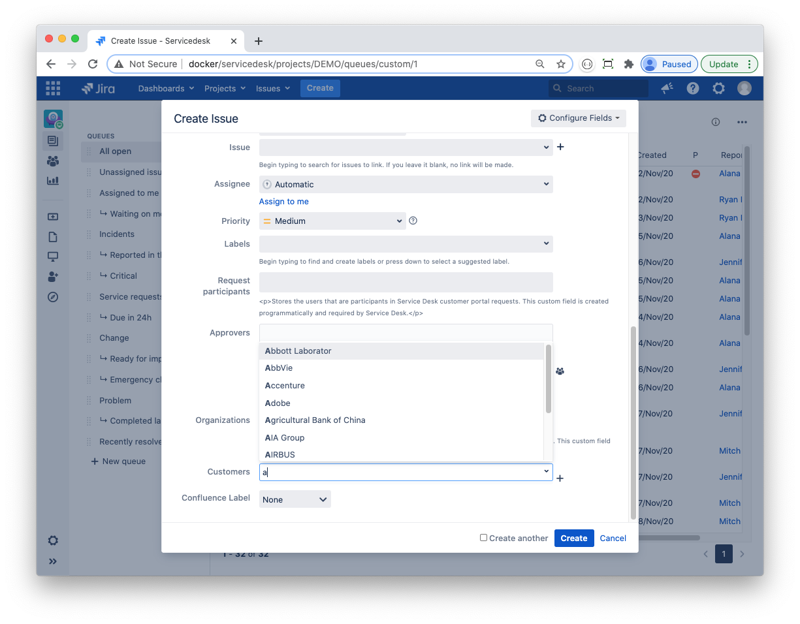
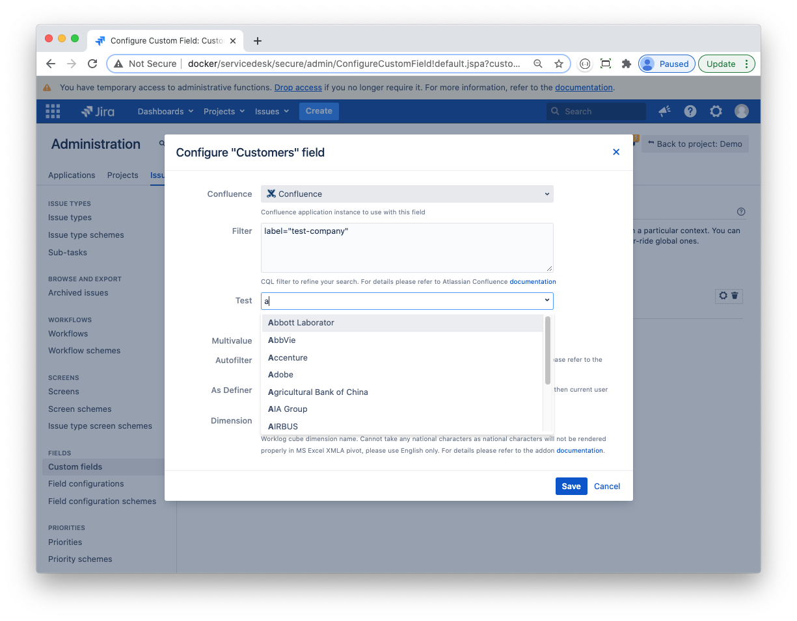
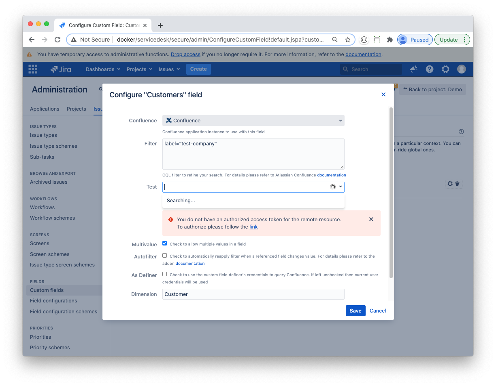
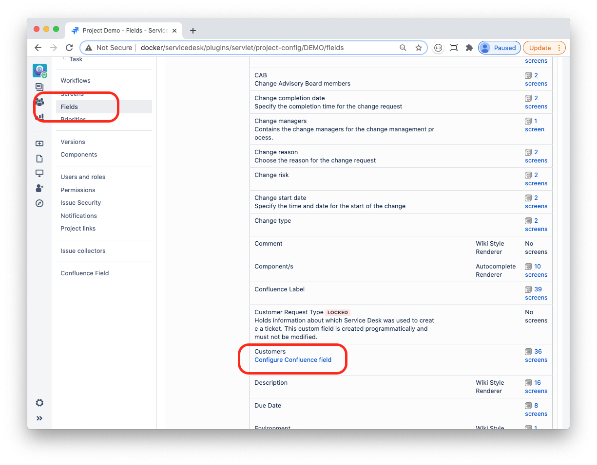

Confluence Field Configuration
Every Confluence Field custom field that you create in your JIRA application should be configured. Below is a sample configuration:

Confluence
In case that your JIRA is linked to multiple Confluence instances you may use the Confluence property to specify the instance that you want to provide data for your custom field. By default it will use the primary Confluence instance.
Filter
You may specify CQL (Confluence Query Language) clause to filter Confluence pages according to your requirements. The clause will be applied to every query that JIRA executes. For example, you may set the filter value to something like:
space="REFDATA" and label="client"If you type `a` in the field, then the resulting CQL will be
type="page" and title~"a*" and space="REFDATA" and label="client" order by titleThe field’s dropdown control will list only those Confluence pages that match this query

Test
Use this field to test your Confluence connection and your CQL-filter validity. It works exactly as a field in an actual issue.
If your JIRA is authorised by the Confluence instance and your filter is valid then you will get a list of Confluence pages that match your query.

If your JIRA is not authorised then you will get an error message:
 Follow the link to start the OpenID “dance” and authorise your JIRA
Multivalue, Autofilter and 'As Definer'
The checkboxes are used to modify Confluence Field's behaviour. If Multivalue checkbox is checked then a user can select multiple Confluence pages in a single field; otherwise the field's value is restricted to only one Confluence page.
Autofilter option is only meaningful when you use substitution variables referencing other fields in your JIRA issue. If this option is checked and the field you reference in your substitution variable changes value, then your Confluence field will be automatically tested against the resulting CQL. If the field's value does not match, then the field will be automatically cleared. If the field is a multi-select, then values that do not match the CQL will be removed, while values that do match will be preserved. For more details please refer to Using Substitution Variables.
As Definer option modifies the way JIRA queries Confluence for pages. By default JIRA will query Confluence using current user’s credentials. In some cases (such as JSD Customer Portal) it may be desirable to use the administrator’s credentials instead. Check this option to enable JIRA to query Confluence using the custom field definer’s credentials (if you are creating the field then your account will be used).
Dimension
Dimension option defines the title of your Confluence Field in XMLA queries in MS Excel. It should be a plain English (national languages are not supported) word, in singular. For example, if you have a Confluence custom field named Products that the dimension value should be Product. For more information about using Mondrian and Excel for OLAP reporting with Confluence Fields please refer to Using Mondrian with Confluence Fields.
JIRA Project-Specific Settings
You can use JIRA project-specific settings for you Confluence fields, if provided they will override the global settings described above . To define the project settings for a Confluence custom field please navigate to JIRA project settings page, select Fields, then click Configure Confluence field link.

Confluence field's project settings are pretty much the same as global settings except that you cannot modify the Dimension title option.